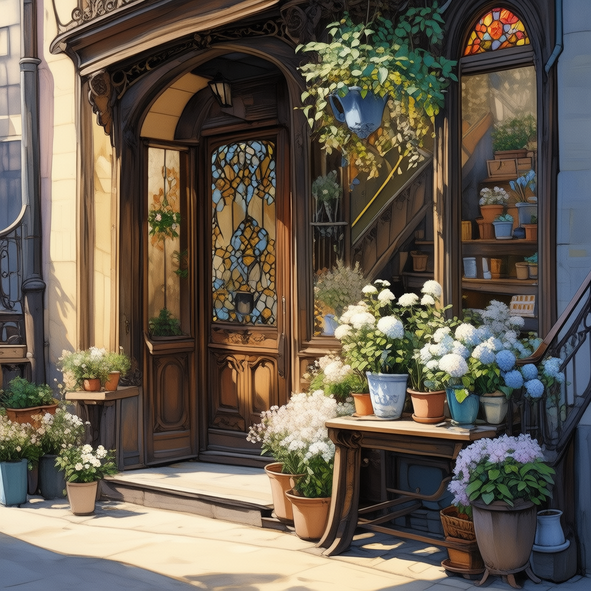

第一章：序章
第1章
游戏进度
共5章

正在生成故事内容...
接下来你打算：
选择下一阶段的发展方向：
情感互动
解密探索
动作冒险
剧情发展
确认选择
×
编辑内容
保存
取消
×
故事背景
世界观设定
前情提要
重要地点
×
角色
×
游戏设定
故事背景
角色设定
游戏参数
复杂度：
章节数：
×
完整剧情树
添加节点
编辑节点
删除节点
×
生成插画设置
场景描述
艺术风格
写实风格
动漫风格
水彩画风格
油画风格
像素风格
色调倾向
温暖色调
冷色调
中性色调
鲜艳色调
其他要求
生成插画
取消